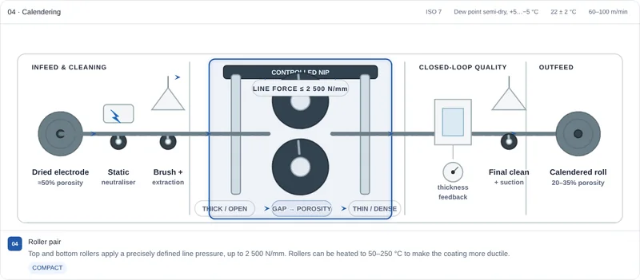

Learning objectives
By the end of this lesson you will be able to:
- put the main steps of lithium-ion cell production in order, in three phases;
- say which property of the finished cell each step sets;
- explain why assembly happens in a dry room;
- explain what formation and aging do, and why they take so long;
- follow a process change through an electrode property to a quality signal measured at the end of the line.
Before you start: Lesson 1 for the parts of a cell. Lesson 1B helps with the electrode recipe and porosity, but is optional.
01Three phases, seventeen steps
Production splits into three phases, and each one has its own kind of factory hall. Electrode manufacturing makes the coated foils as long continuous rolls. Cell assembly cuts and layers them, puts them in a case and fills in the electrolyte. Cell finishing charges each cell for the first time, waits, tests and sorts it.
The order matters. Everything that involves water or solvent happens before the electrolyte goes in, and the electrolyte goes in only once the stack is sealed in its case, apart from the opening it is filled through. Nothing after formation can fix a defect built in before it, which is why so much of the line is measurement.
02Electrode manufacturing
Mixing. Active material, conductive carbon and binder are blended with a solvent into a thick, ink-like slurry: water for graphite, the organic solvent NMP for most positive electrodes. Negative and positive slurries are made in separate rooms, because a trace of one in the other can ruin a batch. The slurry must be smooth, free of lumps and of air bubbles, and of a viscosity the coater can handle. Sets: how evenly every ingredient is spread through the electrode.
Coating. A slot die spreads the slurry onto copper or aluminium foil, typically 5–25 µm thick and up to about 1.5 m wide, moving at tens of metres per minute. The wet film thickness is controlled to a few micrometres. Pouch-cell electrodes are often coated intermittently, leaving bare strips that later become the tabs. Sets: the coat weight, which fixes how much charge each square centimetre of electrode stores — its areal capacity.
Drying. The web runs straight into a dryer that can be up to around 100 m long, through zones from about 50 °C up to about 160 °C. NMP is recovered from the exhaust and reused, both for cost and because it is a hazardous solvent. Drying too fast can drag binder to the surface, leaving the bottom of the coating weakly attached. Sets: adhesion and the evenness of the binder through the coating.
Calendering. Two heavy steel rolls squeeze the dried coating to a defined thickness, taking its porosity from around 50 % down to roughly 20–35 %. Sets: the porosity, and with it the trade-off between energy and power from Lesson 1B, plus how easily the electrolyte will later soak in.
Slitting. Rotating knives cut the wide mother roll into narrower daughter rolls of the exact width the cell needs. The edge must be clean: a burr or a loose particle can later pierce the separator. Sets: edge quality, which decides the risk of internal shorts.
Vacuum drying. The rolls spend hours to two days in vacuum ovens at around 60–150 °C to drive out the last moisture, then go straight into the dry room. Sets: residual water, which would otherwise react with the electrolyte.
Some manufacturers skip the solvent entirely. The powders are mixed dry with a binder that, when sheared, draws out into fine fibres and knits the powder into a self-supporting film, which is then pressed straight onto the foil. There is no slurry, no dryer and no solvent to recover, which saves energy and a great deal of floor space. Getting the film to stick well to the foil is the main difficulty. The CellForge simulator lets you switch the line between both routes.
03Cell assembly in the dry room
From here on, the air itself is a contaminant. The electrolyte salt, LiPF₆, reacts with water to form hydrofluoric acid, which attacks the electrodes and generates gas. So assembly happens in a dry room, where the dew point is held around −30 °C to −60 °C — air drier than a desert — at great energy cost.
Separation, stacking or winding. For pouch cells, individual electrode sheets are punched out, a fraction of a second each, and stacked with separator between them, often by Z-folding one continuous separator back and forth between the sheets. For cylindrical cells, and many prismatic ones, four long strips — two electrodes and two separators — are wound into a jelly roll instead. Alignment matters: the negative electrode is made slightly larger than the positive so that every lithium ion leaving the positive always has graphite opposite it to go into, rather than plating as metal on an edge. Sets: alignment, overhang and the internal geometry of the cell.
Tab welding and packaging. The bare foil edges are welded to the tabs or terminals, by ultrasonic welding for the thin foils of a pouch cell and often by laser in metal cans. The stack goes into its case: a deep-drawn pouch of aluminium laminated with plastic, or a steel or aluminium can. Sets: the electrical resistance of the joints, and the seal that will keep moisture out for the life of the cell.
Electrolyte filling and wetting. A precisely weighed dose of electrolyte is injected under vacuum, so it is drawn into the pores rather than trapping air. Soaking into every pore of the electrodes and separator takes time — hours or more, sometimes helped by warmth, pressure or vibration — and a dry patch left behind is an electrode area that will never work properly. Sets: how completely the electrodes are wetted, which shows up in formation and in impedance.
04Cell finishing: formation, aging, testing
Formation. Each cell gets its first charge and discharge on racks of precision chargers, starting at a low current, roughly 0.1C to 0.5C, and stepping up over several cycles. This is when the solid electrolyte interphase, the SEI from Lesson 1B, grows on the graphite. A slow, controlled first charge gives a thin, even, protective film; rushing it gives a poor film and can plate lithium. The first SEI permanently consumes some of the cell’s lithium, typically a few percent and up to around ten percent, and the cell is designed with that loss built in. Formation takes many hours per cell and ties up a great deal of equipment; in the PEM reference plant it is the single largest equipment investment on the line.
Degassing. Formation releases gas. Pouch cells are made with an extra gas pocket that is pierced in a dry atmosphere, emptied, and sealed off and cut away, leaving the cell at its final size. Cans are usually closed after formation or are built to cope with the gas.
Aging. Cells are then stored, at room temperature or warmer, for days and up to around three weeks, while their open-circuit voltage is tracked. Very little changes in a good cell. A cell with a tiny internal short — from a particle or a burr — loses charge slowly through it, so its voltage falls faster than its neighbours’. Because that difference is small, time is the only way to see it. Sets nothing: aging is a screen, not a process step that improves the cell.
End-of-line testing and grading. Each cell’s capacity, internal resistance and open-circuit voltage are measured, and cells are sorted into grades so that a battery pack can be built from closely matched ones. Cells are then shipped part-charged. For lithium-ion cells shipped on their own by air, international rules cap the state of charge at 30 %.
05Pouch, cylinder, prism
The same electrode rolls can go into three kinds of case, and the case decides part of the assembly line:
| Pouch | Cylindrical | Prismatic | |
|---|---|---|---|
| Electrode layout | Stacked sheets | Wound jelly roll | Wound flat roll or stacked sheets |
| Case | Soft aluminium–plastic laminate | Rigid metal can | Rigid metal box |
| Joining | Ultrasonic tab welding, heat sealing | Welded terminals and lid | Welded terminals and lid |
| Degassing | Yes, through a gas pocket | Usually not a separate step | Usually not a separate step |
| Typical strengths | Light, flexible shapes, good cooling | Fast, mature winding; robust can | Large cells that pack tightly |
06From a process setting to a quality signal
A useful way to understand a production line is as a set of chains with three links: a process setting changes an electrode or cell property, which shows up as a signal measured later. If you can only name the first and the last link, you have a correlation; the middle link makes it an explanation.
| Process setting | Property it changes | Where it shows up |
|---|---|---|
| Coat weight drifts low | Less active material per area, lower areal capacity | Low capacity at grading |
| Dryer too hot or too fast | Binder migrates to the surface; weak adhesion at the foil | Coating flakes; faster capacity fade in cycling |
| Calender pressed harder | Lower porosity, longer ion paths | Slower wetting; higher resistance at high current |
| Worn slitting knife | Burrs on the electrode edge | Voltage drop during aging; failed insulation test |
| Dry-room humidity rises | Water in the cell; acid formed from the salt | Gas and swelling; extra capacity loss |
| Formation current too high | Poor, uneven SEI; possible lithium plating | Lower capacity; shorter cycle life |
07Walk the line in CellForge
CellForge draws all of these stations as machines you can open, with their operating windows, the parts of each machine, and a setpoint lab where changing a process setting moves the downstream quality signals. It covers pouch, cylindrical and prismatic lines and both the wet and dry electrode routes. It opens full screen; come back here for the quiz.

Interactive simulator · about 30 min
CellForge — lithium-ion cell production
- Fifteen stations, drawn as the machines
- Wet and dry electrode routes
- Pouch, cylindrical and prismatic lines
- A setpoint lab and a guided tour
Try this: open the setpoint lab, raise the calendering line pressure, and watch what happens to porosity and to the wetting estimate downstream. Then switch the line to the dry route and see which stations disappear.
08Assumptions and limits
- The step sequence and operating ranges follow the PEM RWTH Aachen and VDMA process guide for a reference graphite/NMC cell. Real plants, chemistries and cell designs use different windows.
- Ranges quoted here are indicative, to give a sense of scale. They are not recipes, equipment specifications or release criteria.
- The quality chains are typical cause-and-effect links, not a complete list; a real signal usually has several possible causes.
- The numbers in the CellForge setpoint lab are teaching relationships, not calibrated plant predictions.
09Check yourself
Work each one out before opening the answer.
Graphite slurry is made with water. So why does assembly need a dry room at all?
Because the water problem starts when the electrolyte arrives. LiPF₆ reacts with water to form hydrofluoric acid, which attacks the electrodes and makes gas. The water used in mixing is removed by drying and vacuum drying before the electrodes enter the dry room; the dry room then keeps new moisture from getting back in before the cell is sealed.
Why does formation start at such a low current?
The first charge builds the SEI on fresh graphite. A slow charge gives a thin, even, protective film. A fast one gives a poorer, uneven film that keeps consuming lithium, and can push lithium in faster than the graphite takes it, plating metal on the surface.
Aging does not improve the cell. Why spend up to three weeks on it?
It is a screen for internal defects. A cell with a tiny internal short discharges itself slowly, so its voltage falls a little faster than a good cell’s. The difference is only millivolts, so it takes days to weeks to tell the two apart reliably — and finding it in the factory is far cheaper than finding it in a customer’s pack.
Which steps does the dry-electrode route remove, and why does that matter?
It removes the solvent: there is no slurry, no long dryer and no solvent recovery. Drying is one of the most energy-hungry and space-hungry parts of the line, so removing it saves both. The cost is a harder problem in making the dry film adhere to the foil.
A slitting knife slowly wears. Which end-of-line signal would catch it, and through which mechanism?
Process: a worn knife leaves burrs on the electrode edge. Property: a burr can pierce the separator and form a small internal short. Signal: during aging, those cells lose open-circuit voltage faster than their neighbours, and they can fail an insulation test. All three links are needed for it to be an explanation.
10Practice quiz
Questions on this lesson: an ordering exercise and multiple choice, marked in your browser, and a written question you check against a model answer.
11References and further reading
The step sequence and ranges follow the first source. The explanation here is written independently.
- S. Michaelis, B. Rothhagen, H. H. Heimes, H. Born, A. Kampker, C. Scherer, P. Lingohr, Production Process of a Lithium-Ion Battery Cell, 5th ed., PEM of RWTH Aachen University and VDMA, Frankfurt am Main, 2026. ISBN 978-3-947920-71-6.
- A. Kwade, W. Haselrieder, R. Leithoff, A. Modlinger, F. Dietrich, K. Droeder, “Current status and challenges for automotive battery production technologies,” Nature Energy 3, 290–300 (2018). doi:10.1038/s41560-018-0130-3
- D. L. Wood III, J. Li, C. Daniel, “Prospects for reducing the processing cost of lithium ion batteries,” Journal of Power Sources 275, 234–242 (2015). doi:10.1016/j.jpowsour.2014.11.019
- Y. Liu, R. Zhang, J. Wang, Y. Wang, “Current and future lithium-ion battery manufacturing,” iScience 24(4), 102332 (2021). doi:10.1016/j.isci.2021.102332
- IATA, Lithium Battery Guidance Document, Packing Instruction 965 (state of charge of lithium-ion cells and batteries shipped by air).